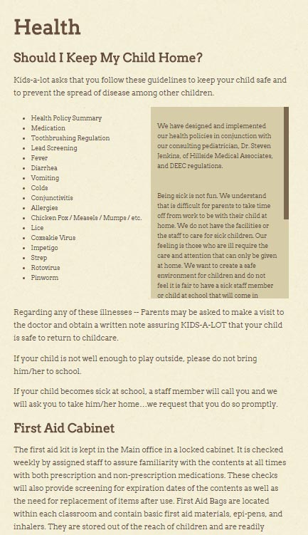
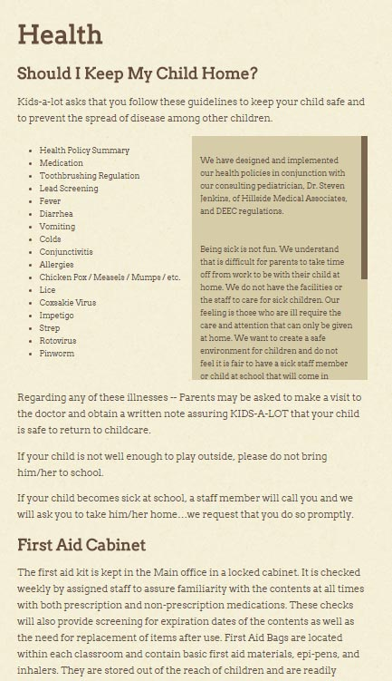

PartyLite
PartyLite had an existing multilingual/multinational training website that hadn't been updated in several months and needed an update. Content was synced across all locales/languages and the entire site was rearchitected and redesigned. Codebase was reduced by over 50%, and UX was greatly improved with a cleaner design, shorter load times, and reduced user clicks.
http://partylite.vo.llnwd.net/o15/u/USOLC/Learning_Center/LC_New/index.html


 
